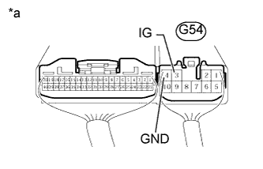
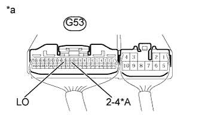
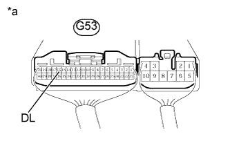
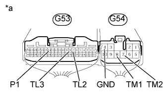
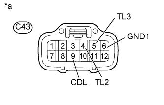
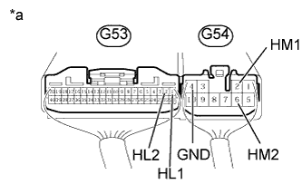
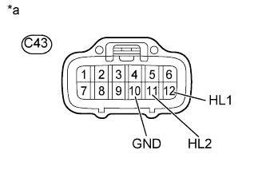

СИСТЕМА РАЗДАТОЧНОЙ КОРОБКИ > ПРОВЕРКА |
| 1. ПРОВЕРЬТЕ КОНТРОЛЬНУЮ ЛАМПУ |
Контрольная лампа 4LO:
Установите замок зажигания в положение ON (ВКЛ).
Переместите рычаг переключения передач в положение N (когда автомобиль остановлен).
Для моделей с 1GR-FE, 1KD-FTV:
Переведите переключатель положения раздаточной коробки из положения H4 в положение L4.
Для моделей с 2TR-FE, 5L-E:
Переведите переключатель положения раздаточной коробки из положения H4L в положение L4L.
Проверьте контрольную лампу 4LO.
Контрольная лампа блокировки межосевого дифференциала:
Установите замок зажигания в положение ON (ВКЛ).
Для моделей с 1GR-FE, 1KD-FTV:
Переведите переключатель блокировки межосевого дифференциала из положения Free в положение Lock.
Для моделей с 2TR-FE, 5L-E:
Переведите переключатель положения раздаточной коробки из положения H4F в положение H4L.
Проверьте контрольную лампу блокировки межосевого дифференциала.
| 2. ПРОВЕРЬТЕ ЭБУ ПОЛНОГО ПРИВОДА № 2 (ПИТАНИЕ) |
|  |
Измерьте напряжение в соответствии со значениями, приведенными в таблице.
| Контакты для подключения диагностического прибора | Положение переключателя | Заданные условия |
| G54-3 (IG) - масса | Зажигание включено | 11–14 В |
| *a | Устройство с подсоединенным жгутом проводов (ЭБУ полного привода) |
Измерьте сопротивление в соответствии со значениями, приведенными в таблице ниже.
| Контакты для подключения диагностического прибора | Условие | Заданные условия |
| G54-4 (GND) - масса | Всегда | Менее 1 Ом |
| 3. ПРОВЕРЬТЕ ЭБУ ПОЛНОГО ПРИВОДА № 2 (ПЕРЕКЛЮЧАТЕЛЬ ПОЛОЖЕНИЯ РАЗДАТОЧНОЙ КОРОБКИ) |
|  |
Измерьте напряжение в соответствии со значениями, приведенными в таблице.
| Контакты для подключения диагностического прибора | Положение переключателя | Заданные условия |
| G53-13 (LO) - масса | Зажигание включено Переключатель положения раздаточной коробки в положении H4 | 10,5 - 14 В |
| Зажигание включено Переключатель положения раздаточной коробки в положении L4 | Менее 1,5 В |
| Контакты для подключения диагностического прибора | Положение переключателя | Заданные условия |
| G53-11 (2-4) - масса | Зажигание включено Переключатель положения раздаточной коробки в положении H4F | Менее 1,5 В |
| Зажигание включено Переключатель положения раздаточной коробки в положении H4L | Менее 1,5 В | |
| Зажигание включено Переключатель положения раздаточной коробки в положении L4L | 10,5 - 14 В | |
| G53-13 (LO) - масса | Зажигание включено Переключатель положения раздаточной коробки в положении H4F | 10,5 - 14 В |
| Зажигание включено Переключатель положения раздаточной коробки в положении H4L | Менее 1,5 В | |
| Зажигание включено Переключатель положения раздаточной коробки в положении L4L | Менее 1,5 В |
| *A | для моделей с 2TR-FE, 5L-E |
| *a | Устройство с подсоединенным жгутом проводов (ЭБУ полного привода) |
| 4. ПРОВЕРЬТЕ ЭБУ ПОЛНОГО ПРИВОДА (ПЕРЕКЛЮЧАТЕЛЬ БЛОКИРОВКИ МЕЖОСЕВОГО ДИФФЕРЕНЦИАЛА) (для моделей с 1GR-FE, 1KD-FTV) |
|  |
Измерьте напряжение в соответствии со значениями, приведенными в таблице.
| Контакты для подключения диагностического прибора | Положение переключателя | Заданные условия |
| G53-16 (DL) - масса | Замок зажигания в положении ON (ВКЛ) Переключатель блокировки межосевого дифференциала в положении ON (ВКЛ) | Менее 1,5 В |
| Замок зажигания в положении ON (ВКЛ) Переключатель блокировки межосевого дифференциала в положении OFF (ВЫКЛ) | 9,5-14 В |
| *a | Устройство с подсоединенным жгутом проводов (ЭБУ полного привода) |
| 5. ПРОВЕРЬТЕ ПРИВОД ПЕРЕКЛЮЧЕНИЯ РАЗДАТОЧНОЙ КОРОБКИ "MULTIMODE" |
Проверьте жгут проводов и разъем между ЭБУ полного привода и приводом переключения раздаточной коробки в сборе (приводом переключения раздаточной коробки "multimode").
Отсоедините разъем C43 привода.
Отсоедините разъемы ЭБУ G53 и G54.
Измерьте сопротивление в соответствии со значениями, приведенными в таблице ниже.
| Контакты для подключения диагностического прибора | Условие | Заданные условия |
| G53-7 (TL2) - C43-4 (TL2) | Всегда | Менее 1 Ом |
| G53-7 (TL2) - масса | Всегда | 100 кОм или более |
| G53-8 (TL3) - C43-5 (TL3) | Всегда | Менее 1 Ом |
| G53-8 (TL3) - масса | Всегда | 100 кОм или более |
| G53-14 (P1) - C43-9 (CDL) | Всегда | Менее 1 Ом |
| G53-14 (P1) - масса | Всегда | 100 кОм или более |
| G54-7 (TM2) - C43-1 (TM2) | Всегда | Менее 1 Ом |
| G54-7 (TM2) - масса | Всегда | 100 кОм или более |
| G54-8 (TM1) - C43-2 (TM1) | Всегда | Менее 1 Ом |
| G54-8 (TM1) - масса | Всегда | 100 кОм или более |
| C43-6 (GND1) - масса | Всегда | Менее 1 Ом |
| C43-10 (GND) - масса | Всегда | Менее 1 Ом |
| *a | Вид спереди разъема со стороны жгута проводов: (к ЭБУ полного привода) | *b | Вид спереди разъема со стороны жгута проводов: (к приводу переключения раздаточной коробки в сборе) |
Проверьте ЭБУ полного привода (цепь привода переключения раздаточной коробки "multimode").
Подсоедините разъемы G53 и G54 ЭБУ.
Подсоедините разъем C43 привода.
|  |
Измерьте напряжение в соответствии со значениями, приведенными в таблице ниже.
| Контакты для подключения диагностического прибора | Положение выключателя | Заданные условия |
| G54-8 (TM1) - G54-4 (GND) | Замок зажигания в положении ON (ВКЛ) Переключатель блокировки межосевого дифференциала в положении FREE → LOCK (электродвигатель привода переключения раздаточной коробки "multimode" осуществляет включение блокировки) | 10-14 В |
| Замок зажигания в положении ON (ВКЛ) Переключатель блокировки межосевого дифференциала в положении FREE → LOCK (электродвигатель привода переключения раздаточной коробки "multimode" остановлен) | Менее 1,5 В | |
| G54-7 (TM2) - G54-4 (GND) | Замок зажигания в положении ON (ВКЛ) Переключатель блокировки межосевого дифференциала в положении LOCK → FREE (электродвигатель привода переключения раздаточной коробки "multimode" осуществляет выключение блокировки) | 10-14 В |
| Замок зажигания в положении ON (ВКЛ) Переключатель блокировки межосевого дифференциала в положении LOCK → FREE (электродвигатель привода переключения раздаточной коробки "multimode" остановлен) | Менее 1,5 В | |
| G53-7 (TL2) - G54-4 (GND) | Замок зажигания в положении ON (ВКЛ) Переключатель блокировки межосевого дифференциала в положении LOCK | Менее 1,5 В |
| Замок зажигания в положении ON (ВКЛ) Переключатель блокировки межосевого дифференциала в положении FREE | 10,5 - 14 В | |
| G53-8 (TL3) - G54-4 (GND) | Замок зажигания в положении ON (ВКЛ) Переключатель блокировки межосевого дифференциала в положении LOCK | 10,5 - 14 В |
| Замок зажигания в положении ON (ВКЛ) Переключатель блокировки межосевого дифференциала в положении FREE | Менее 1,5 В | |
| G53-14 (P1) - G54-4 (GND) | Замок зажигания в положении ON (ВКЛ) Переключатель блокировки межосевого дифференциала в положении FREE | 9,5 - 14 В |
| Замок зажигания в положении ON (ВКЛ) Переключатель блокировки межосевого дифференциала в положении LOCK | Менее 1,5 В |
| Контакты для подключения диагностического прибора | Положение выключателя | Заданные условия |
| G54-8 (TM1) - G54-4 (GND) | Замок зажигания в положении ON (ВКЛ) Переключатель положения раздаточной коробки в положении H4F → H4L (электродвигатель привода переключения раздаточной коробки "multimode" осуществляет включение блокировки) | 10-14 В |
| Замок зажигания в положении ON (ВКЛ) Переключатель положения раздаточной коробки в положении H4F → H4L (электродвигатель привода переключения раздаточной коробки "multimode" остановлен) | Менее 1,5 В | |
| G54-7 (TM2) - G54-4 (GND) | Замок зажигания в положении ON (ВКЛ) Переключатель положения раздаточной коробки в положении H4L → H4F (электродвигатель привода переключения раздаточной коробки "multimode" осуществляет выключение блокировки) | 10-14 В |
| Замок зажигания в положении ON (ВКЛ) Переключатель положения раздаточной коробки в положении H4L → H4F (электродвигатель привода переключения раздаточной коробки "multimode" остановлен) | Менее 1,5 В | |
| G53-7 (TL2) - G54-4 (GND) | Замок зажигания в положении ON (ВКЛ) Переключатель положения раздаточной коробки в положении H4L или L4L | Менее 1,5 В |
| Замок зажигания в положении ON (ВКЛ) Переключатель положения раздаточной коробки в положении H4F | 10,5 - 14 В | |
| G53-8 (TL3) - G54-4 (GND) | Замок зажигания в положении ON (ВКЛ) Переключатель положения раздаточной коробки в положении H4L или L4L | 10,5 - 14 В |
| Замок зажигания в положении ON (ВКЛ) Переключатель положения раздаточной коробки в положении H4F | Менее 1,5 В | |
| G53-14 (P1) - G54-4 (GND) | Замок зажигания в положении ON (ВКЛ) Переключатель положения раздаточной коробки в положении H4F | 9,5 - 14 В |
| Замок зажигания в положении ON (ВКЛ) Переключатель положения раздаточной коробки в положении H4L или L4L | Менее 1,5 В |
| *a | Устройство с подсоединенным жгутом проводов (ЭБУ полного привода) |
Проверьте выходное напряжение ЭБУ полного привода.
Отсоедините разъем C43 привода.
Подсоедините разъемы G53 и G54 ЭБУ.
|  |
Измерьте напряжение в соответствии со значениями, приведенными в таблице ниже.
| Контакты для подключения диагностического прибора | Положение выключателя | Заданные условия |
| C43-9 (CDL) - C43-6 (GND1) | Замок зажигания в положении ON (ВКЛ) | 9,5 - 14 В |
| C43-4 (TL2) - C43-6 (GND1) | Замок зажигания в положении ON (ВКЛ) | 10,5 - 14 В |
| C43-5 (TL3) - C43-6 (GND1) | Замок зажигания в положении ON (ВКЛ) | 10,5 - 14 В |
| *a | Вид спереди разъема со стороны жгута проводов: (к приводу переключения раздаточной коробки в сборе) |
Проверьте привод переключения раздаточной коробки "multimode" (привод переключения раздаточной коробки в сборе).
Снимите привод переключения раздаточной коробки в сборе (Нажмите здесь).
Проверьте переключение из состояния блокировки (LOCK) в состояние разблокировки (FREE).
Подсоедините провода через реле, как показано на рисунке, и убедитесь, что вилка привода перемещается из положения LOCK в положение FREE.
| Контакты для подключения диагностического прибора | Условие | Заданные условия |
| 4 (TL2) - 6 (GND1) | После завершения переключения из положения LOCK в положение FREE | 0,5 МОм или более |
| 5 (TL3) - 6 (GND1) | После завершения переключения из положения LOCK в положение FREE | Менее 12,5 Ом |
| 9 (CDL) - 10 (GND) | После завершения переключения из положения LOCK в положение FREE | 0,5 МОм или более |
| *1 | Реле DEF | - | - |
| *a | Устройство с неподсоединенным жгутом проводов (привод переключения раздаточной коробки в сборе) | *b | Переключение из положения LOCK в положение FREE |
Проверьте переключение из состояния разблокировки (FREE) в состояние блокировки (LOCK).
Подсоедините провода через реле, как показано на рисунке, и убедитесь, что вилка привода перемещается из положения FREE в положение LOCK.
| Контакты для подключения диагностического прибора | Условие | Заданные условия |
| 4 (TL2) - 6 (GND1) | После завершения переключения из положения FREE в положение LOCK | Менее 12,5 Ом |
| 5 (TL3) - 6 (GND1) | После завершения переключения из положения FREE в положение LOCK | 0,5 МОм или более |
| 9 (CDL) - 10 (GND) | После завершения переключения из положения FREE в положение LOCK | Менее 12,5 Ом |
| *1 | Реле DEF | - | - |
| *a | Устройство с неподсоединенным жгутом проводов (привод переключения раздаточной коробки в сборе) | *b | Переключение из положения FREE в положение LOCK |
| 6. ПРОВЕРЬТЕ ПРИВОД ПЕРЕКЛЮЧЕНИЯ ВЫСШЕЙ/НИЗШЕЙ ПЕРЕДАЧ РАЗДАТОЧНОЙ КОРОБКИ |
Проверьте жгут проводов и разъем между ЭБУ полного привода и приводом переключения раздаточной коробки (приводом переключения высшей/низшей передач раздаточной коробки).
Отсоедините разъем C43 привода.
Отсоедините разъемы G53 и G54 ЭБУ.
Измерьте сопротивление в соответствии со значениями, приведенными в таблице ниже.
| Контакты для подключения диагностического прибора | Условие | Заданные условия |
| G53-1 (HL1) - C43-12 (HL1) | Всегда | Менее 1 Ом |
| G53-1 (HL1) - масса | Всегда | 100 кОм или более |
| G53-2 (HL2) - C43-11 (HL2) | Всегда | Менее 1 Ом |
| G53-2 (HL2) - масса | Всегда | 100 кОм или более |
| G54-2 (HM1) - C43-8 (HM1) | Всегда | Менее 1 Ом |
| G54-2 (HM1) - масса | Всегда | 100 кОм или более |
| G54-6 (HM2) - C43-7 (HM2) | Всегда | Менее 1 Ом |
| G54-6 (HM2) - масса | Всегда | 100 кОм или более |
| C43-10 (GND) - масса | Всегда | Менее 1 Ом |
| *a | Вид спереди разъема со стороны жгута проводов: (к ЭБУ полного привода) | *b | Вид спереди разъема со стороны жгута проводов: (к приводу переключения раздаточной коробки в сборе) |
Проверьте ЭБУ полного привода (цепь привода переключения высшей/низшей передач раздаточной коробки).
Подсоедините разъемы G53 и G54 ЭБУ.
Подсоедините разъем C43 привода.
|  |
Измерьте напряжение в соответствии со значениями, приведенными в таблице.
| Контакты для подключения диагностического прибора | Положение переключателя | Заданные условия |
| G54-6 (HM2) - G54-4 (GND) | Замок зажигания в положении ON (ВКЛ) Переключатель положения раздаточной коробки в положении L4 → H4 (электродвигатель привода переключения высшей/низшей передач раздаточной коробки осуществляет переключение с низшей на высшую передачу) | 10-14 В |
| Замок зажигания в положении ON (ВКЛ) Переключатель положения раздаточной коробки в положении L4 → H4 (электродвигатель привода переключения высшей/низшей передач раздаточной коробки остановлен) | Менее 1,5 В | |
| G54-2 (HM1) - G54-4 (GND) | Замок зажигания в положении ON (ВКЛ) Переключатель положения раздаточной коробки в положении H4 → L4 (электродвигатель привода переключения высшей/низшей передач раздаточной коробки осуществляет переключение с высшей на низшую передачу) | 10-14 В |
| Замок зажигания в положении ON (ВКЛ) Переключатель положения раздаточной коробки в положении H4 → L4 (электродвигатель привода переключения высшей/низшей передач раздаточной коробки остановлен) | Менее 1,5 В | |
| G53-1 (HL1) - G54-4 (GND) | Замок зажигания в положении ON (ВКЛ) Переключатель положения раздаточной коробки в положении H4 | 10,5 - 14 В |
| Замок зажигания в положении ON (ВКЛ) Переключатель положения раздаточной коробки в положении L4 | Менее 1,5 В | |
| G53-2 (HL2) - G54-4 (GND) | Замок зажигания в положении ON (ВКЛ) Переключатель положения раздаточной коробки в положении H4 | Менее 1,5 В |
| Замок зажигания в положении ON (ВКЛ) Переключатель положения раздаточной коробки в положении L4 | 10,5 - 14 В |
| Контакты для подключения диагностического прибора | Положение переключателя | Заданные условия |
| G54-6 (HM2) - G54-4 (GND) | Замок зажигания в положении ON (ВКЛ) Переключатель положения раздаточной коробки в положении L4L → H4L (электродвигатель привода переключения высшей/низшей передач раздаточной коробки осуществляет переключение с низшей на высшую передачу) | 10-14 В |
| Замок зажигания в положении ON (ВКЛ) Переключатель положения раздаточной коробки в положении L4L → H4L (электродвигатель привода переключения высшей/низшей передач раздаточной коробки остановлен) | Менее 1,5 В | |
| G54-2 (HM1) - G54-4 (GND) | Замок зажигания в положении ON (ВКЛ) Переключатель положения раздаточной коробки в положении H4L → L4L (электродвигатель привода переключения высшей/низшей передач раздаточной коробки осуществляет переключение с высшей на низшую передачу) | 10-14 В |
| Замок зажигания в положении ON (ВКЛ) Переключатель положения раздаточной коробки в положении H4L → L4L (электродвигатель привода переключения высшей/низшей передач раздаточной коробки остановлен) | Менее 1,5 В | |
| G53-1 (HL1) - G54-4 (GND) | Замок зажигания в положении ON (ВКЛ) Переключатель положения раздаточной коробки в положении H4F или H4L | 10,5 - 14 В |
| Замок зажигания в положении ON (ВКЛ) Переключатель положения раздаточной коробки в положении L4L | Менее 1,5 В | |
| G53-2 (HL2) - G54-4 (GND) | Замок зажигания в положении ON (ВКЛ) Переключатель положения раздаточной коробки в положении H4F или H4L | Менее 1,5 В |
| Замок зажигания в положении ON (ВКЛ) Переключатель положения раздаточной коробки в положении L4L | 10,5 - 14 В |
| *a | Устройство с подсоединенным жгутом проводов (ЭБУ полного привода) |
Проверьте выходное напряжение ЭБУ полного привода.
Подсоедините разъемы G53 и G54 ЭБУ.
Отсоедините разъем C43 привода.
|  |
Измерьте напряжение в соответствии со значениями, приведенными в таблице.
| Контакты для подключения диагностического прибора | Положение переключателя | Заданные условия |
| C43-11 (HL2) - C43-10 (GND) | Замок зажигания в положении ON (ВКЛ) | 10,5 - 14 В |
| C43-12 (HL1) - C43-10 (GND) | Замок зажигания в положении ON (ВКЛ) | 10,5 - 14 В |
| *a | Вид спереди разъема со стороны жгута проводов: (к приводу переключения раздаточной коробки в сборе) |
Проверьте привод переключения высшей/низшей передач раздаточной коробки (привод переключения раздаточной коробки в сборе).
Снимите привод переключения раздаточной коробки в сборе (Нажмите здесь).
Проверьте переключение с высшей (HIGH) передачи на низшую (LOW).
Подсоедините провода через реле, как показано на рисунке, и убедитесь, что вилка привода перемещается из положения HIGH в положение LOW.
| Контакты для подключения диагностического прибора | Условие | Заданные условия |
| 12 (HL1) - 10 (GND) | После завершения переключения из положения HIGH в положение LOW | Менее 12,5 Ом |
| 11 (HL2) - 10 (GND) | После завершения переключения из положения HIGH в положение LOW | 0,5 МОм или более |
| *1 | Реле DEF | - | - |
| *a | Устройство с неподсоединенным жгутом проводов (привод переключения раздаточной коробки в сборе) | *b | Переключение из положения HIGH в положение LOW |
Проверьте переключение с низшей (LOW) передачи на высшую (HIGH).
Подсоедините провода через реле, как показано на рисунке, и убедитесь, что вилка привода перемещается из положения LOW в положение HIGH.
| Контакты для подключения диагностического прибора | Условие | Заданные условия |
| 12 (HL1) - 10 (GND) | После завершения переключения из положения LOW в положение HIGH | 0,5 МОм или более |
| 11 (HL2) - 10 (GND) | После завершения переключения из положения LOW в положение HIGH | Менее 12,5 Ом |
| *1 | Реле DEF | - | - |
| *a | Устройство с неподсоединенным жгутом проводов (привод переключения раздаточной коробки в сборе) | *b | Переключение из положения LOW в положение HIGH |